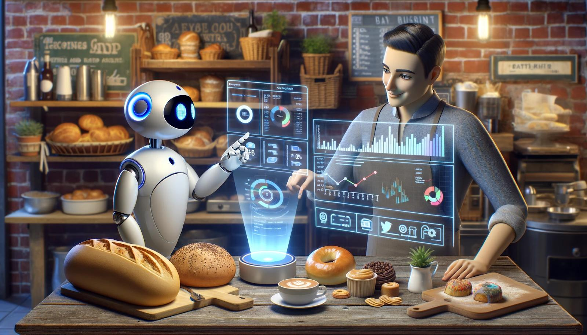
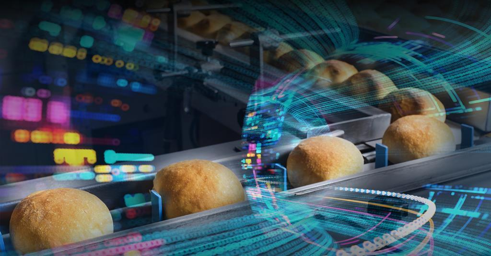
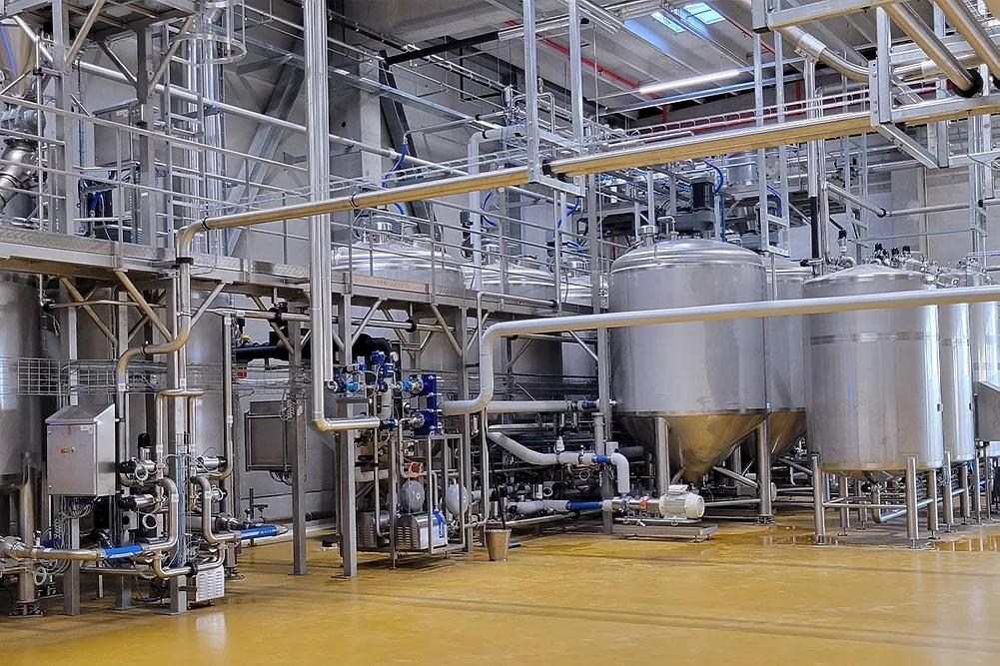
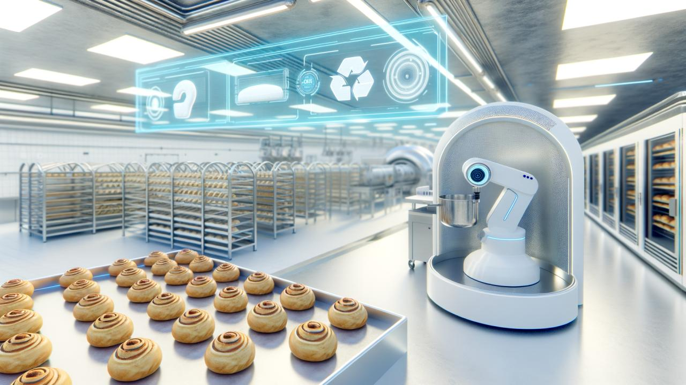
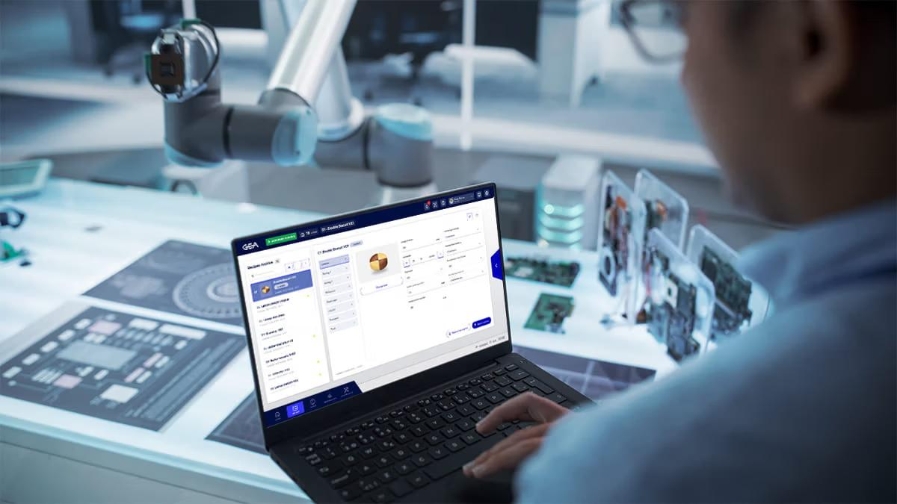

Predict. Monitor.
Optimise.
The FermentIQ transforms raw fermentation data into actionable dough-readiness intelligence helping UK bakeries and pizzerias eliminate guesswork, reduce waste by 22%, and protect institutional baking knowledge through AI-driven consistency DNA.
to UK hospitality sector
in the United Kingdom
by 1°C kitchen temperature shift
full fermentation intelligence access
From Raw Ambient Signals to Predictive Dough Readiness in Real Time
Every The FermentIQ deployment follows a proven four-stage fermentation intelligence journey from signal ingestion and biological state mapping, to readiness prediction and automated intervention all without requiring specialist food science expertise from your kitchen team.
Ingest & Monitor
Real-time capture of ambient temperature, humidity, CO₂ levels, and batch-specific ingredient data via IoT Fermentation Intelligence Units (FIUs) installed across kitchen zones.

Map & Classify
The Fermentation State Ontology (FSO) engine maps biological signals to a structured Dough Intelligence profile identifying yeast activity, pH drift, CO₂ production and over-proof risk in real time.

Predict & Alert
The Latent Fermentation Readiness Index (LFRI) forecasts optimal readiness windows and automatically triggers alerts moving kitchens from First-In-First-Out to First-Ready-First-Out (FRFO) logic.

Optimise & Preserve
Every successful bake is encoded into Institutional Baking Memory capturing expert dough logic as permanent Baking Equity, protecting consistency even through high staff turnover.
Five Intelligence Engines. One Fermentation Operating System.
The FermentIQ combines five proprietary AI modules into a single dough-readiness intelligence platform the only solution that unifies ambient signal ingestion, fermentation state mapping, predictive readiness scoring, batch diagnostics, and institutional memory preservation into one audit-ready quality infrastructure for UK bakeries and pizzerias.

Real-Time Fermentation Monitoring
IoT-based capture of pH, temperature, dissolved oxygen, pressure, and humidity across every dough batch. Continuous biological signals replace static wall thermometers and manual poke tests.

Latent Fermentation Readiness Index (LFRI)
Proprietary biological scoring engine that converts raw ambient signals into a structured Fermentation State Ontology (FSO) providing a real-time readiness score for every active batch.

Batch Delta Diagnostics (BDD)
Automatically identifies the root cause of consistency erosion whether flour-batch variance, prover lag, or night-time compressor drift by analysing the delta between expected trajectory and actual field state.